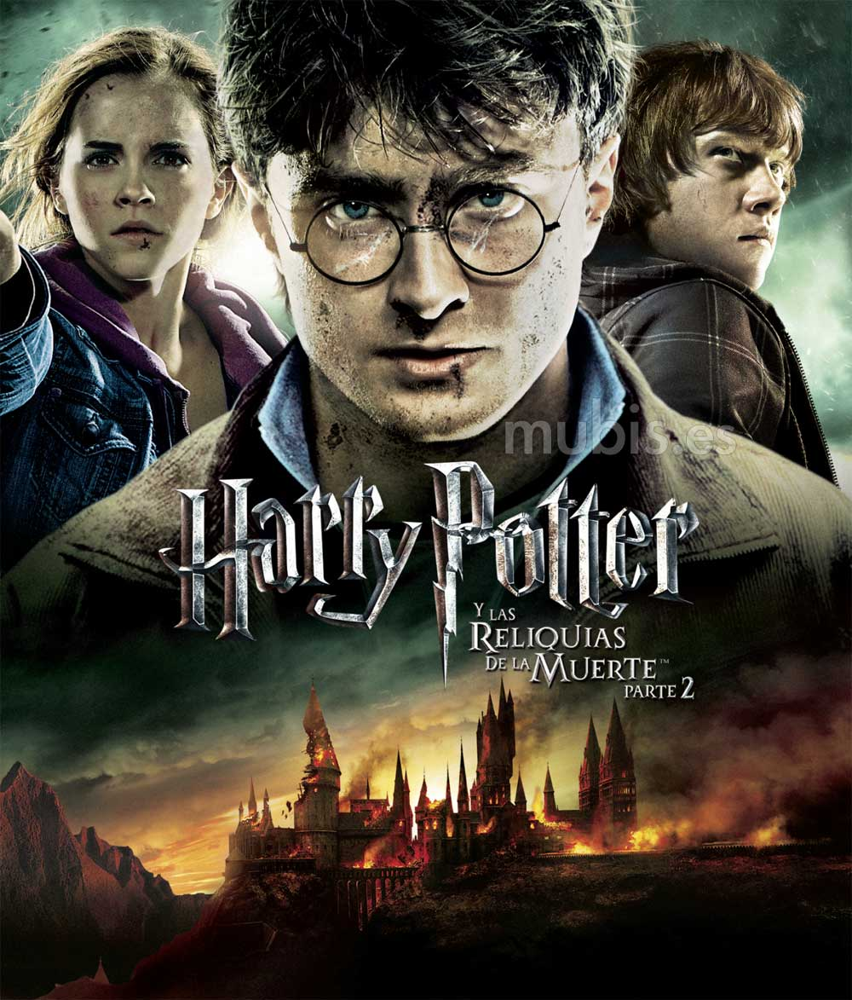

Harry Potter
Harry Potter es una serie de novelas fantásticas escrita por la autora británica J. K. Rowling, en la que se describen las aventuras del joven aprendiz de magia y hechicería Harry Potter y sus amigos Hermione Granger y Ron Weasley, durante los años que pasan en el Colegio Hogwarts de Magia y Hechicería.